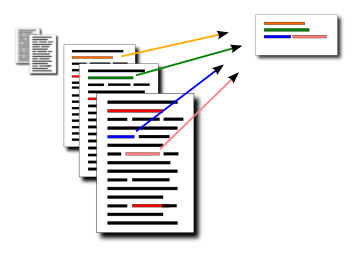

      <section>
        <div class="inner">
          <div class="block block-copy">
<h1>Multi-Document Summarization and Semantic Relatedness</h1>
<p><strong>Licentiate Thesis</strong></p>
<p><strong>Olof Mogren</strong></p>

<p><strong>Abstract:</strong>  Automatic summarization is the process of presenting the contents of written documents in a short, comprehensive fashion. Many approaches have been proposed for this problem, some of which extract content from the input documents (extractive methods), and others that generate the language in the summary based on some representation of the document contents (abstractive methods). </p>
<p>This thesis is concerned with extractive summarization in the multi-document setting, and we define the problem as choosing the most informative sentences from the input documents, while minimizing the redundancy in the summary. This definition calls for a way of measuring the similarity between sentences that captures as much as possible of the meaning. We present novel ways of measuring the similarity between sentences, based on neural word embeddings and sentiment analysis. We also show that combining multiple sentence similarity scores, by multiplicative aggregation, helps in the process of creating better extractive summaries. </p>
<p>We also discuss the use of information extraction for improving the quality of automatic summarization by providing ways of assessing the salience of information elements, as well as helping with the fluency of the output and providing the temporal dimension. Furthermore, we present graph-based algorithms for clustering words by co-occurrence, and for summarizing short online user-reviews by computing bicliques. The biclique algorithm provides a fast, simple algorithm for summarization in many e-commerce settings. </p>
<p>The thesis is comprised of five different papers, listed below. Click on the links for information and to download the fulltexts and related material. </p>
<p><strong>Supervisors:</strong> Peter Damaschke and Devdatt Dubhashi<br />
<strong>Defense:</strong> The thesis was successfully defended in public on November 20th, 2015 at 10:00 in room ML2, Hörsalsvägen 7B, Chalmers University of Technology.<br />
<strong>Discussion leader:</strong> Tapani Raiko from Aalto University<br />
<strong>Fulltext:</strong> <a href="http://mogren.one/lic/mogren2015licentiate.pdf">Download the whole thesis in PDF format. </a></p>
<h2>Paper I: Extractive Summarization using Continuous Vector Space Models</h2>
<p><strong>Comments:</strong> This is a workshop paper showing preliminary results on multi-document summarization with continuous vector space models for sentence representation. The experiments were performed on opinionated online user reviews.<br />
<strong>My contributions:</strong> I implemented the submodular optimization algorithm for sentence selection and created the setup for the experimental evaluation.<br />
<em>2nd Workshop on Continuous Vector Space Models and their Compositionality CVSC 2014, Gothenburg Sweden</em><br />
<em>Mikael Kågebäck, Olof Mogren, Nina Tahmasebi, Devdatt Dubhashi</em><br />
<a href="/publications/2014/extractive">More info</a>, <a href="http://mogren.one/summarization/kageback2014extractive.pdf">PDF fulltext</a>.</p>
<h2>Paper II: Extractive Summarization by Aggregating Multiple Similarities</h2>
<p><strong>Comments:</strong> Many existing methods for extracting summaries rely on comparing the similarity of two sentences in some way. In this paper, we present new ways of measuring this similarity, based on sentiment analysis and continuous vector space representations, and show that combining these together with similarity measures from existing methods, helps to create better summaries. The finding is demonstrated with MULTSUM, a novel summarization method that uses ideas from kernel methods to combine sentence similarity measures. Submodular optimization is then used to produce summaries that take several different similarity measures into account. Our method improves over the state-of-the-art on standard benchmark datasets; it is also fast and scale to large document collections, and the results are statistically significant.<br />
<strong>My contributions:</strong> I am the main author of this work. I designed the study, performed the experiments, and wrote the manuscript.<br />
<em>RANLP 2015, Hissar, Bulgaria, September 6th-11th</em><br />
<em>Olof Mogren, Mikael Kågebäck, Devdatt Dubhashi</em><br />
<a href="/summarization">More info</a>, <a href="/summarization/mogren2015extractive.pdf">PDF fulltext</a>.</p>
<h2>Paper III: Visions and Open Challenges for a Knowledge-Based Culturomics</h2>
<p><strong>Comments:</strong> This is a white paper outlining some ideas and challenges within the field of culturomics.<br />
<strong>My contributions:</strong> I wrote section 5, titled &quot;Temporal Semantic Summarization&quot;, where I shared my views on possible research directions on generic multi-document summarization.<br />
<em>International Journal on Digital Libraries, February 2015</em><br />
<em>Nina Tahmasebi, Lars Borin, Gabriele Capannini, Devdatt Dubhashi, Peter Exner, Markus Forsberg, Gerhard Gossen, Fredrik D. Johansson, Richard Johansson, Mikael Kågebäck, Olof Mogren, Pierre Nugues, Thomas Risse</em><br />
<a href="/publications/2015/visions">More info</a>, <a href="/publications/2015/visions/tahmasebi-visions-2015.pdf">PDF fulltext</a>.</p>
<h2>Paper IV: Editing Simple Graphs</h2>

<p><strong>Comments:</strong> Inspired by the word-co-occurrence graph from Wikipedia documents, this paper presents an FPT approach to cluster the words.<br />
<strong>My contributions:</strong>  I contributed to the study and the analysis, and to the writing of the manuscript, including illustrations.<br />
<em>Journal of Graph Algorithms and Applications 18 (2014), 557-576</em><br />
<em>Peter Damaschke, Olof Mogren</em><br />
<a href="http://mogren.one/publications/2014/editing/">More info</a>, <a href="http://mogren.one/publications/2014/editing/damaschke2014editing.pdf">PDF fulltext</a>.</p>
<h2>Paper V: Summarizing Online User Reviews Using Bicliques</h2>
<p><strong>Comments:</strong> This paper presents an approach to summarize online user-reviews based on finding bicliques in the bipartite word-document graph.<br />
<strong>My contributions:</strong> I contributed to the study, did a substantial part of the experimental work, and contributed to the writing of the manuscript. <br />
<em>SOFSEM 2016, LNCS 9587, pp 569-579.</em><br />
<em>Azam Sheikh Muhammad, Peter Damaschke, Olof Mogren</em><br />
<a href="/summarization/muhammad2016summarizing.pdf">PDF fulltext</a>.</p>          </div>
        </div>
      </section>

